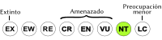

Pithecia pithecia
| Mono viudo | |
|---|---|
 | |
| Riesgo de extinción | |
|  Casi amenazado (UICN) | |
| Clasificación científica | |
| Reino: | Animalia |
| Filo: | Chordata |
| Clase: | Mammalia |
| Orden: | Primates |
| Familia: | Pitheciidae |
| Género: | Pithecia |
| Especie: | Pithecia pithecia |
| Nombre binomial | |
|
Pithecia pithecia Linnaeus, 1766 | |
| Distribución | |
 Mapa de distribución de Pithecia pithecia | |
Contenido
Información de Evaluación
- Categoría y Criterio Regional: Casi Amenazado A2c
- Fecha de Evaluación Regional:2015
- Categoría y Criterio UICN: Preocupación Menor
- Evaluadores: Jesús Morales-Campos y Ariany García-Rawlins
Justificación
Evaluaciones Previas
1999: No Evaluado (NE)
2008: No Evaluado (NE)
Información General
Nombres comunes
Mono viuda, viuda, viejito, mono negro cariblanco, mono barbudo cariblanco, viudito, white-faced monkey, arikí (kariña), keysu (kariña), chic (pemón), warga (akawayu), thariki (makushi)
Notas taxonómicas
Sinónimos
Descripción
Es un primate de mediano tamaño relativo (~2 kg). Su pelaje es largo y lacio. Los machos son de color negro con rostro blanco, mientras que las hembras son grisáceas en la región dorsal y de un tono pardo claro con visos grisáceos en la región ventral. Cola larga no prensil con denso pelaje del mismo color del dorso (negro en machos y grisáceo en hembras). Diurno, frugívoro y el único primate dicromático de Venezuela.
Distribución
Pithecia pithecia se localiza en el extremo nororiental de la Guayana venezolana. Se ubica entre la región selvática de la sierra de Imataca al norte, hasta el área del sector conocido como Kilómetro 88, Piedra de la Virgen, del estado Bolívar, en el espacio forestal ubicado antes del borde septentrional del altiplano de la Gran Sabana. Se localiza en la cuenca del río Cuyuní al este, hasta la margen derecha del río Caroní al oeste, incluyendo algunas islas cercanas a ese lado del Caroní, originadas por la inundación de la represa de Guri. Los registros conocidos se ubican entre 15 y 350-400 m de altitud (Bodini 1983, Bodini y Hernández 1987, Linares 1998, Urbani y Portillo-Quintero 2013). En un reciente estudio sobre el estado de conservación de los primates diurnos de la Guayana venezolana, se indica que su área de distribución incluye los siguientes hábitats: bosques ombrófilos altos siempreverdes del sur del delta del Orinoco, bosques ombrófilos altos semideciduos (cuenca del río Cuyuní) y bosques ombrófilos piemontanos subsiempreverdes (Urbani y Portillo-Quintero 2013). Su distribución a nivel mundial se restringe a Brasil, Guayana Francesa, Guyana, Surinam y Venezuela
- Sistema: Terrestre
- Bioregión:
- Intervalo altitudinal (m): 15-400
- Endémica: No
Situación
En la Guayana venezolana, Pithecia pithecia es claramente la especie de primate más conocida científicamente; fue estudiada por más de una década en el proyecto dirigido por M. A. Norconk y W. C. Kinzey. En ese trabajo se realizaron investigaciones sobre ecología básica, dispersión de semillas, dieta, visión por color, comportamiento social, dominancia social, memoria espacial, riesgo de depredación, agonismo y espacio interindividual, demografía, selección de sitios de dormida y locomoción (e.g. Walker 1993, Ceballos 1996, Norconk 1996, Norconk et al. 1996, Riveros 1996, Harrison y Norconk 1999, Norconk et al. 1999, Brush 2000, Urbani 2002).
- EOO (km2): Temporalmente sin información
- AOO (km2): Temporalmente sin información
- Tendencia Poblacional: Decreciendo
Amenazas
Si bien ha sido históricamente considerada bastante sensible al cambio de la cubierta vegetal, Urbani (2006) reportó su presencia en un bosque degradado cercano al río Cuyuní, e indicó reportes similares en los alrededores de Tumeremo. Sin embargo, Urbani y Portillo-Quintero (2013) realizaron un análisis para identificar hábitats potenciales de Pithecia pithecia y las cifras parecen reflejar situaciones contrastantes que podrían afectar las posibilidades reales de su conservación. Según el análisis, 92% de su hábitat se encuentra en bosques húmedos en la actualidad catalogados como relativamente estables. Si bien a primera vista pareciera una condición favorable, el primate enfrenta serias amenazas por parte de poblaciones humanas debido a su distribución restringida al noreste de la región de Guayana, una de las más pobladas del estado Bolívar, así como por el hecho de que ninguna fracción del hábitat de su distribución conocida hoy día se encuentra bajo protección. Su situación es particular al encontrarse afectada por el acelerado incremento de la minería, la ganadería, la vialidad en zonas de bosques y por actividades de extracción de madera en el noreste del estado Bolívar (Urbani 2006). A pesar de que la cacería no parece ser una causa sustancial para su situación de conservación, su hábitat en la sierra de Imataca está casi en su totalidad cuadriculado para concesiones madereras y, como se indicó, no presenta resguardo dentro del sistema de áreas naturales protegidas del país. Por otra parte, la región central de su distribución se encuentra afectada por la expansión pecuaria, la cual genera una matriz de fragmentación muy avanzada, así como por el crecimiento de áreas urbanas. Además, el sur de su distribución está gravemente afectado por la acelerada e intensa actividad minera en los bosques aledaños. Todo lo anterior sitúa al mamífero en una creciente situación de riesgo.
Conservación
Es urgente la creación de áreas de conservación y programas de educación ambiental para proteger a la especie. Deben tomarse medidas para evitar la expansión ganadera y regular las actividades mineras que están afectando seriamente a los bosques de la región. La extracción maderera requiere de pronta penalización en las regiones donde se ubica esta especie que no se encuentran sujetas a concesiones madereras legales. A nivel internacional está incluida en el Apéndice II de la Convención sobre el comercio internacional de especies amenazadas de fauna y flora silvestres (Cites 2014).
Autoría
Autores
Bernardo Urbani y Carlos Portillo-Quintero
Colaboradores
Ilustrador
Referencias
- Bodini, R. (1983). Distribución geográfica y conservación de primates sub-humanos en Venezuela. Páginas: 101-113. En: Saavedra, C. J., Mittermeier, R. A. y Bastos-Santos, I. (Eds.). La Primatología en Latinoamérica. WWF/Editora Littera Maciel Ltda. Bairro Cincão (Brazil).
- Bodini, R. y Pérez-Hernández, R. (1987). Distribution of the species and subspecies of cebids in Venezuela. Páginas: 231-244. En: Patterson, B. D. y Timm, R. M. (Eds.). Studies in Neotropical Mammalogy. Fieldiana Zoology, n.s., 39. Field Museum of Natural History. Chicago.
- Brush, J. A. (2000). Forest structure and sleeping site selection by a willd white-faced saki group (Pithecia pithecia). American Journal of Primatology 51(Suppl 1): 49.
- Ceballos, N. (1996). Comportamiento social de una tropa de mono viudo, Pithecia pithecia (Cebidae: Primates), en una isla del Embalse de Guri (Estado Bolívar). Tesis no publicada, Universidad Central de Venezuela. Caracas.
- Cites. (2014). Apéndices I, II y III (válidos desde el 14 de septiembre de 2014). Convención sobre el Comercio Internacional de Especies Amenazadas de Fauna y Flora Silvestres (CITES). Disponible en <www.cites.org/sites/default/files/esp/app/2014/S-Appendices-2014-09-14.pdf>. 47 pp.
- Harrison, A. L. y Norconk, M. A. (1999). Social dominance in a group of white-faced sakis (Pithecia pithecia) in the context of a rare and limited resource. American Journal of Primatology 49(1): 60.
- Linares, O. J. (1998). Mamíferos de Venezuela. Sociedad conservacionista Audubon. Caracas. 691 pp.
- Norconk, M. A. (1996). Seasonal variation in the diets of white-faced and bearded sakis (Pithecia pithecia and Chiropotes satanas) in Guri Lake, Venezuela. Páginas: 403-423. En: Norconk, M. A., Rosenberger, A. L. y Garber, P. A. (Eds.). Adaptive Radiations of Neotropical Primates. Plenum Press. New York.
- Norconk, M. A., Sussman, R. W. y Phillips-Conroy, J. (1996). Primates of Guayana shield forests: Venezuela and the Guianas. Páginas: 69-83. En: Norconk, M. A., Rosenberger, A. L. y Garber, P. A. (Eds.). Adaptive Radiations of Neotropical Primates. Plenum Press. New York
- Norconk, M. A., Gleason, T. M. y Harrison, A. L. (1999). Feeding rates and social dominance among white-faced saki females. American Journal of Physical Anthropology(Suppl 28): 212.
- Riveros, M. (1996). Dieta y comportamiento alimentario de una tropa de Pithecia pithecia (mono saki cara blanca), en una isla del Embalse de Guri, Edo. Bolívar. Tesis no publicada, Universidad Central de Venezuela.
- Urbani, B. (2002). A field observation on color selection by New World sympatric primates, Pithecia pithecia and Alouatta seniculus. Primates 43: 95-101.
- Urbani, B. (2006). A survey of primate populations in northeastern Venezuelan Guayana. Primate Conservation 20: 47-52.
- Urbani, B. y Portillo-Quintero, C. (2013). Aportes para el conocimiento de la distribución y estado de conservación de los primates diurnos de la Guayana venezolana. Livro de resumos do II Congresso Latino Americano de Primatologia e XV Congresso Brasileiro de Primatologia, CD-Rom/E-book, n/p.
- Walker, S. (1993). Positional adaptations and ecology of the Pitheciinae. Ph. D., Tesis sin publicar, University of New York City.